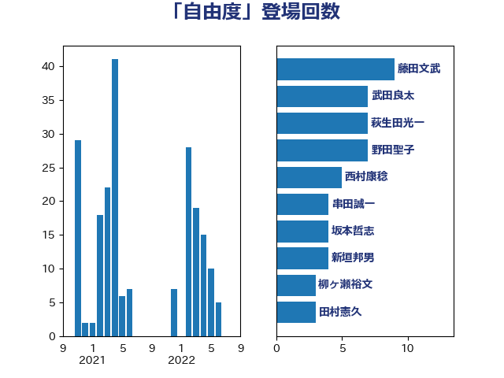

単語「自由度」

| 藤田文武 | 日本維新の会 | 9 回 |
| 武田良太 | 自由民主党 | 7 回 |
| 萩生田光一 | 自由民主党 | 7 回 |
| 野田聖子 | 自由民主党 | 7 回 |
| 西村康稔 | 自由民主党 | 5 回 |
| 串田誠一 | 日本維新の会 | 4 回 |
| 坂本哲志 | 自由民主党 | 4 回 |
| 新垣邦男 | 立憲民主党 | 4 回 |
| 柳ヶ瀬裕文 | 日本維新の会 | 3 回 |
| 田村憲久 | 自由民主党 | 3 回 |
| 金子恭之 | 自由民主党 | 3 回 |
| 須藤元気 | 無所属 | 3 回 |
| 麻生太郎 | 自由民主党 | 3 回 |
| 三浦信祐 | 公明党 | 2 回 |
| 吉川元 | 立憲民主党 | 2 回 |
| 吉川赳 | 無所属 | 2 回 |
| 奥野総一郎 | 立憲民主党 | 2 回 |
| 小森卓郎 | 自由民主党 | 2 回 |
| 小泉進次郎 | 自由民主党 | 2 回 |
| 森山浩行 | 立憲民主党 | 2 回 |
| 清水真人 | 自由民主党 | 2 回 |
| 玉木雄一郎 | 国民民主党 | 2 回 |
| 若松謙維 | 公明党 | 2 回 |
| 菅義偉 | 自由民主党 | 2 回 |
| 蓮舫 | 立憲民主党 | 2 回 |
| 西銘恒三郎 | 自由民主党 | 2 回 |
| 赤池誠章 | 自由民主党 | 2 回 |
| 赤羽一嘉 | 公明党 | 2 回 |
| 野上浩太郎 | 自由民主党 | 2 回 |
| 階猛 | 立憲民主党 | 2 回 |
| 馬淵澄夫 | 立憲民主党 | 2 回 |
| 高木かおり | 日本維新の会 | 2 回 |
| 上田英俊 | 自由民主党 | 1 回 |
| 中西健治 | 自由民主党 | 1 回 |
| 住吉寛紀 | 日本維新の会 | 1 回 |
| 加田裕之 | 自由民主党 | 1 回 |
| 吉田とも代 | 日本維新の会 | 1 回 |
| 国定勇人 | 自由民主党 | 1 回 |
| 大塚耕平 | 国民民主党 | 1 回 |
| 大島敦 | 立憲民主党 | 1 回 |
| 守島正 | 日本維新の会 | 1 回 |
| 宮路拓馬 | 自由民主党 | 1 回 |
| 寺田学 | 立憲民主党 | 1 回 |
| 尾身朝子 | 自由民主党 | 1 回 |
| 平沢勝栄 | 自由民主党 | 1 回 |
| 後藤祐一 | 立憲民主党 | 1 回 |
| 後藤茂之 | 自由民主党 | 1 回 |
| 掘井健智 | 日本維新の会 | 1 回 |
| 本庄知史 | 立憲民主党 | 1 回 |
| 杉本和巳 | 日本維新の会 | 1 回 |
| 柳本顕 | 自由民主党 | 1 回 |
| 梶山弘志 | 自由民主党 | 1 回 |
| 浅田均 | 日本維新の会 | 1 回 |
| 浜野喜史 | 国民民主党 | 1 回 |
| 海江田万里 | 立憲民主党 | 1 回 |
| 熊田裕通 | 自由民主党 | 1 回 |
| 牧山ひろえ | 立憲民主党 | 1 回 |
| 田名部匡代 | 立憲民主党 | 1 回 |
| 石井苗子 | 日本維新の会 | 1 回 |
| 礒崎哲史 | 国民民主党 | 1 回 |
| 穂坂泰 | 自由民主党 | 1 回 |
| 篠原豪 | 立憲民主党 | 1 回 |
| 紙智子 | 日本共産党 | 1 回 |
| 緑川貴士 | 立憲民主党 | 1 回 |
| 藤岡隆雄 | 立憲民主党 | 1 回 |
| 逢坂誠二 | 立憲民主党 | 1 回 |
| 高橋光男 | 公明党 | 1 回 |
| 鳩山二郎 | 自由民主党 | 1 回 |